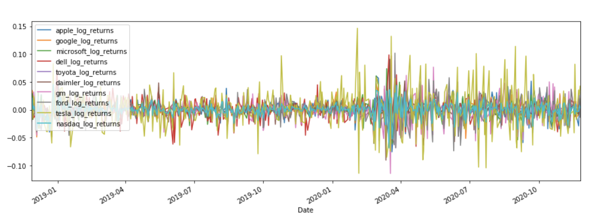
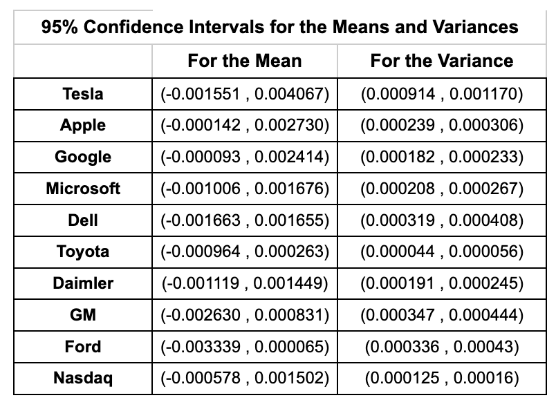
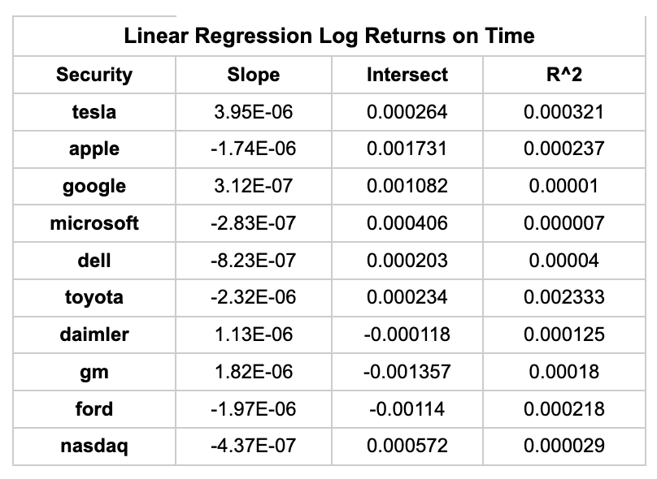
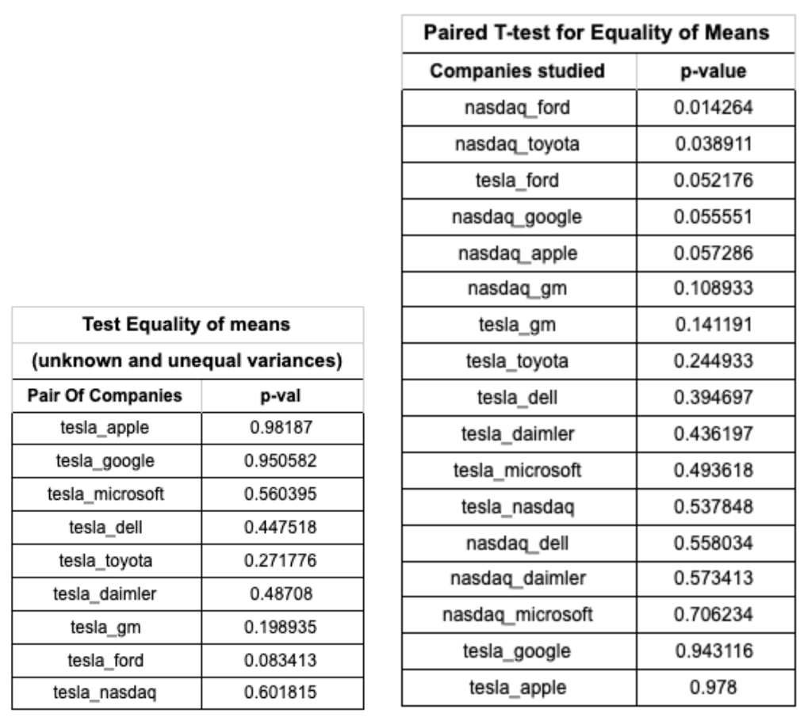
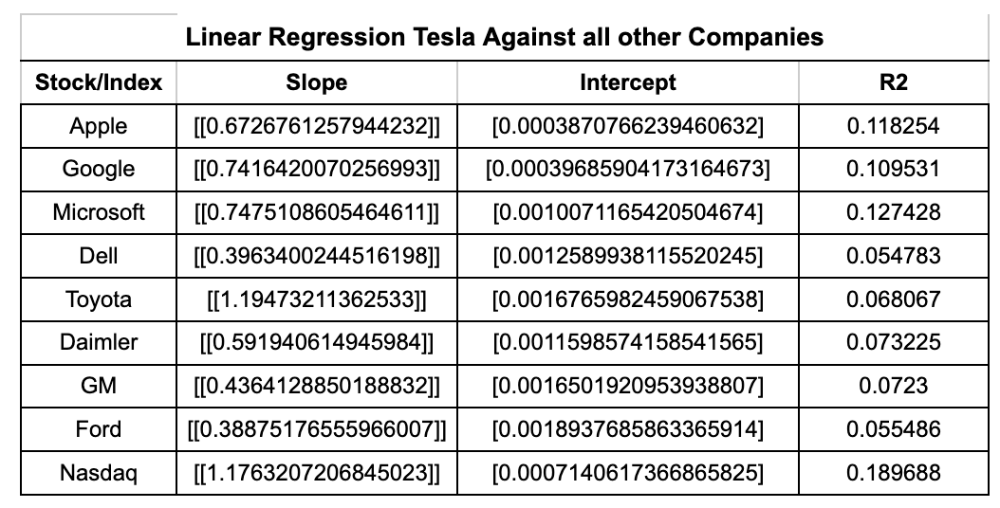

Objectives
Since its inception the automotive industry comprises almost entirely the same big old companies, namely, Ford, General Motors, Toyota, Daimler, among a few others. It seems the word “newcomer” is anathema to this industry. If a company manages to get started, it takes many decades to become as big as the competition. Four out of the five automakers listed here were founded at least 84 years ago. One may speculate that this is due to the enormous amount of knowledge and resources needed from the very beginning, most likely with no prospects of profits on the near horizon, and then, the difficulties of gaining customers that would rather buy a car from a long trusted manufacturer.
However, Tesla, Inc. has proven by its meteoric rise to be an exception to the rule. Founded in 2003, it has had a growth that appears to be antithetic to the movements and developments of the automobile industry, with a current market capitalization of $578.21B, the biggest for an automaker, trailed in second place by Toyota with a market capitalization of $211.66B. It seems that Tesla's growth mimics more the behavior of a tech company, like Google or Apple. It may be interesting to explore this idea statistically and give advice to our clients on how to view Tesla—as a successful car manufacturer or something else.
In order to achieve this, the following analysis structure based on the log-returns of the securities was followed:
- An individual study to elucidate the behavior of each security’s returns.
- A pairing-based statistical analysis of Tesla’s returns against other companies.
- Multiple linear regressions comparing Tesla to the automotive sector and the tech sector.
Analysis
The histogram of the log-return shows that the distribution of these values for all the securities is approximately normal. Also, the data was plotted against the theoretical normal distribution, corroborating that in all cases the log-returns form an approximate line, indicating approximate normality with R² coefficients all over 0.85.

Just by looking at this graph, we should expect a higher volatility from Tesla, which deviates more than the other time series curves that appear clustered around zero—even during the first peak of the global pandemic in April 2020.
Considering 95% confidence, we performed parameter estimation on the mean and variance of the returns using t-distribution and chi-squared distribution intervals.

The results show that the average returns are very close to zero, though skewed positively. The tech sector shows broader variance intervals, while the automotive sector shows tighter ones—except Tesla, again aligning more with tech behavior.

The slope in linear regressions over time is close to zero, and the R² values confirm that time does not explain much of the variation in returns.
Pairing-based Analyses
We performed hypothesis testing for the equality of the means using both unequal variances and paired t-tests. In both, we compared Tesla to other companies and to the Nasdaq index.

In the test with unequal variances, we could not reject the hypothesis that Tesla’s returns have the same mean as other companies. However, Tesla appeared more similar to tech firms (e.g., Google, Apple) than automakers.
In the paired t-test, only Toyota and Ford were significantly different from Nasdaq. Again, Tesla's strongest alignment was with Google and Apple.

Linear regressions showed that variation in Tesla's returns is better explained by tech companies. Multiple regressions confirmed this: Tesla vs. Tech sector yielded R² = 0.15, while Tesla vs. Automakers yielded R² = 0.11.
Conclusions
Understanding stock behavior is complex, but we can say Tesla is not your average automaker. Statistically, its returns align more with tech firms than automotive ones. This opens questions—Is Tesla more a tech company than a carmaker? Is it reshaping its industry or riding a wave of hype? What’s clear is that Tesla stands apart. Its case deserves continued attention.